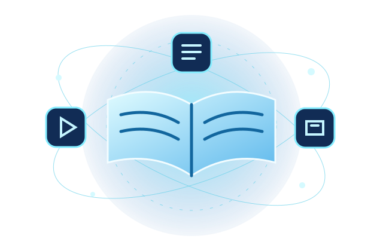

CONHECIMENTO QUE APROXIMA
Universo do
Conhecimento.
Leia, ouça, assista e aprenda no seu tempo. Explore a fé, a cultura e o conhecimento em um só lugar.
Explorar o acervo
CONHECIMENTO QUE APROXIMA
Leia, ouça, assista e aprenda no seu tempo. Explore a fé, a cultura e o conhecimento em um só lugar.
Explorar o acervo